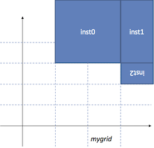

NAND gate generation and BAG export tutorial¶
This tutorial contains instructions to generate a NAND gate layout and export it to OA database through BAG framework. The scripts used in this tutorial can be found here: quick_start_BAG.py.
Setup and running¶
Run following commands below to install laygo and load.
Download cds_ff_mpt PDK from Cadence Customer Support Make sure you can launch virtuoso and make a layout using the PDK. For BWRC users, PDK is installed in
/tools/cadence/GPDK/cds_ff_mpt_v_0.3/.Clone BAG2_cds_ff_mpt repo.
$ git clone git@github.com:ucb-art/BAG2_cds_ff_mpt.git
The technology setup repo has 2 submodules in it: BAG_framework and laygo. Let’s load the submodules. Enter the BAG_cds_ff_mpt (or BAG2_cds_ff_mpt) directory and type this:
$ git submodule init $ git submodule update
- If you want to update all submodules to the latest ones, type this:
$ git submodule foreach git pull origin master
Open .cshrc, bag_config.yaml file, and check if all path variables are set correctly. For BWRC users, all variables are set correctly so skip this step.
Source .cshrc, launch virtuoso, type
load "start_bag.il"in CIW to load skill APIs for bag.Launch bag, by typing this:
$ start_bag.sh
Launch the generator script, by typing this in python console.
run laygo/quick_start_BAG.py
You should see the generated nand gate layout in laygo_working/nand_test and it should looks like this:
 nand
nand
Initialize GridLayoutGenerator¶
Let’s take a look into the detail of the layout generator. Open laygo/quick_start_BAG.py Following command will initialize GridLayoutGenerator, the main generator object that contains all core generation functions.
#initialize
laygen = laygo.GridLayoutGenerator(config_file="laygo_config.yaml")
laygen.use_array = True # use InstanceArray instead of Instance
Note that laygo_config.yaml is passed, which contains process specific parameters. use_array is used to enable a recently added feature; InstanceArray. Most legacy generator codes are not using this option.
Load template and grid database¶
The example technology setup uses cds_ff_mpt_microtemplates_dense for the primitive template library. All primitive template and grid information are stored in cds_ff_mpt_microtemplates_dense_templates.yaml, cds_ff_mpt_microtemplates_dense_grids.yaml and those files should be loaded before the actual layout generation steps. Run the following commands to load database.
# load template and grid
utemplib = laygen.tech + '_microtemplates_dense' # device template library name
laygen.load_template(filename='./labs/' + utemplib + '_templates.yaml', libname=utemplib)
laygen.load_grid(filename='./labs/' + utemplib + '_grids.yaml', libname=utemplib)
laygen.templates.sel_library(utemplib)
laygen.grids.sel_library(utemplib)
load_template and load_grid functions load yaml files that store template and grid database to laygen.templates and laygen.grid. If you want to see the loaded information, run the following commands.
laygen.templates.display()
laygen.grids.display()
Or you can specify template (or grid name) to display, like this.
laygen.templates.display(libname='cds_ff_mpt_microtemplates_dense', templatename='nmos4_fast_center_nf2')
laygen.grids.display(libname='cds_ff_mpt_microtemplates_dense', gridname='route_M1_M2_basic')
Then you can see the specified template and grid information, as shown below.
Display lib:cds_ff_mpt_microtemplates_dense, template:nmos4_fast_center_nf2
[Library]cds_ff_mpt_microtemplates_dense
[Template]nmos4_fast_center_nf2
xy:[[0.0, 0.0], [0.4, 0.9]] pins:{'S0': {'netname': 'S0', 'layer': ['M1', 'pin'], 'xy': array([[-0.05, 0.2 ],
[ 0.05, 0.5 ]])}, 'S1': {'netname': 'S1', 'layer': ['M1', 'pin'], 'xy': array([[ 0.35, 0.2 ],
[ 0.45, 0.5 ]])}, 'D0': {'netname': 'D0', 'layer': ['M1', 'pin'], 'xy': array([[ 0.15, 0.2 ],
[ 0.25, 0.5 ]])}, 'G0': {'netname': 'G0', 'layer': ['M1', 'pin'], 'xy': array([[ 0.125, 0.625],
[ 0.275, 0.775]])}}
Display lib:cds_ff_mpt_microtemplates_dense, grid:route_M1_M2_basic
[Library]cds_ff_mpt_microtemplates_dense
[Grid]route_M1_M2_basic
route_M1_M2_basic width:0.2 height:0.2 xgrid:[ 0.] ygrid:[ 0.] xwidth:[ 0.1] ywidth:[ 0.1] viamap:{via_M1_M2_0: [0, 0] }
Library and cell creation¶
The next step is creating a library and cell to work on. Run the following commands to create a workspace.
# library & cell creation
laygen.add_library('laygo_working')
laygen.add_cell('nand_test')
The commands will create library and cell to work on. In order to
display the contents, simply type laygen.display().
The output will be like this. (The nand_test is empty because we did not
create anything yet).
Display
[Library]laygo_working
[Cell]nand_test
Cell placements¶
The following commands will place 4 2-fingered transistors (2 nmos, 2 pmos) and cluster them to 2 lists, nd and pd.
# placement ########################################################################################################
# placement parameters
pg = 'placement_basic' # placement grid
nd = [] # nmos
nd += [laygen.relplace(cellname='nmos4_fast_boundary', gridname=pg, refobj=None, shape=None)]
nd += [laygen.relplace(cellname='nmos4_fast_center_nf2', gridname=pg, refobj=nd[-1].right, shape=[1, 1])]
nd += [laygen.relplace(cellname='nmos4_fast_boundary', gridname=pg, refobj=nd[-1].right, shape=None)]
nd += [laygen.relplace(cellname='nmos4_fast_boundary', gridname=pg, refobj=nd[-1].right, shape=None)]
nd += [laygen.relplace(cellname='nmos4_fast_center_nf2', gridname=pg, refobj=nd[-1].right, shape=[1, 1])]
nd += [laygen.relplace(cellname='nmos4_fast_boundary', gridname=pg, refobj=nd[-1].right, shape=None)]
pd = [] # pmos
pd += [laygen.relplace(cellname='pmos4_fast_boundary', gridname=pg, refobj=nd[0].top, shape=None, transform='MX')]
pd += [laygen.relplace(cellname='pmos4_fast_center_nf2', gridname=pg, refobj=pd[-1].right, shape=[1, 1], transform='MX')]
pd += [laygen.relplace(cellname='pmos4_fast_boundary', gridname=pg, refobj=pd[-1].right, shape=None, transform='MX')]
pd += [laygen.relplace(cellname='pmos4_fast_boundary', gridname=pg, refobj=pd[-1].right, shape=None, transform='MX')]
pd += [laygen.relplace(cellname='pmos4_fast_center_nf2', gridname=pg, refobj=pd[-1].right, shape=[1, 1], transform='MX')]
pd += [laygen.relplace(cellname='pmos4_fast_boundary', gridname=pg, refobj=pd[-1].right, shape=None, transform='MX')]
GridLayoutGenerator.relplace function places templates on grid, using relative geometry information provided as arguments. Basically there are 2 ways to place templates:
xy: with xy argument, the function places the template (specified by templatename) at xy on grid, specified by gridname. The default value is [0, 0].
For example, the following command will place inst0 (cellname is mycell0) at [3, 1], on mygrid.
inst0 = laygen.relplace(cellname='mycell0', gridname='mygrid', xy=[1, 3])
transform paramter is used for mirroring/rotation. For example, this command will do a mirrored placement in x-axis.
inst0 = laygen.relplace(cellname='mycell0', gridname='mygrid', xy=[1, 3], transform='MX')
Possible transform parameters are R0, R180, MX, MY, and MXY. The following figure shows how instances are placed by running the above two commands.
 placement
placementrefobj: You can use the refobj argument to specify the reference object that the new object is placed from.
Following objects can be used for the refobj argument.
Instance / InstanceArray : the new instance will be placed at the right side of refobj.
For example, the following command will place inst1 (mycell1) at the right side of inst0, on mygrid.
#pseudo code. modify parameter values for actual use inst1 = laygen.relplace(cellname='mycell1', gridname='mygrid', refobj=inst0)
 placement
placementPointer objects defined in Instance / InstanceArray : The Instance and InstanceArray objects have various Pointer objects to contain geometry information. The Pointers can be used for refobj. Supported Pointer objects are left, right, top, bottom.
For example, the following command will place inst2 at the bottom side of inst1, mirrored in x-axis.
#pseudo code. modify parameter values for actual use inst2 = laygen.relplace(cellname='mycell2', gridname='mygrid', refobj=inst1.bottom)
placement
You can also combine the two ways of placement. The following example will place inst3 at the right side of inst2, with [1, 0] offset on ‘mygrid’, mirrored in x-axis.
#pseudo code. modify parameter values for actual use
inst3 = laygen.relplace(cellname='mycell3', gridname='mygrid', xy=[1, 0], refobj=inst2.right, transform='MX')
 placement
placement
The way of architecting your templates completely depends on your preference. The example generator codes assume nmos4_fast_center_nf2 and pmos4_fast_center_nf2 templates are used for 2-fingered NMOS/PMOS devices, and nmos4_fast_boundary and pmos4_fast_boundary templates for boundary geometries for NMOS/PMOS devices.
The resulting layout should look like this.
 placement
placement
If you want to display the layout, run the following command and open laygo/nand_test.
laygen.export_BAG(prj)
The relplace function also has other arguments, explained below:
- shape parameter sets the array dimension, for mosaic placements. (eg. shape=[2, 3] will create a 2x3 dimensional array)
- spacing parameter sets the ‘pitch’ of the array placement. If None, laygo calculates the spacing parameter from the size of template.
- direction parameters sets the direction where the object placed from (with respect to the reference instance). For example, refinstname=X, direction=’top’ will place the new instance on top of instance X. Possible values are left, right, top, and bottom.
- transform parameter sets the transformation of the instance. Possible values are R0, R180, MX, MY, and MXY.
Refer to the API documentation for details.
Signal routing¶
GridLayoutGenerator.route function is used for creating metal wires. Like the relplace function, the route function can use xy0/xy1, and/or refobj0/refobj1. route uses two arguments for each type of input because the route needs to calculate the starting and ending point of wire.
This example creates a vertical and a horizontal route on grid. Layers are automatically selected based on their routing directions.
#pseudo code. modify parameter values for actual use
laygen.route(gridname0='myroutegrid', xy0=[2, 4], xy1=[2, 6]) #vertical
laygen.route(gridname0='myroutegrid', xy0=[2, 4], xy1=[5, 4]) #horizontal
This example shows a routing example using refobj (from A pin of inst0 to B pin of inst1).
#pseudo code. modify parameter values for actual use
laygen.route(gridname0='myroutegrid', refobj0=inst0.pins['A'], refobj1=inst1.pins['B'])
As shown in the relplace section, the xy and refobj parameters can be combined.
#pseudo code. modify parameter values for actual use
laygen.route(gridname0='myroutegrid', refobj0=inst0.pins['A'], xy0=[2, 1], refobj1=inst1.pins['B'], xy=[0, 1])
Let’s go back to the real example. Running the following commands creates a rotated L shape route structure, stacked from M1 to M3, for one of the nand gate input.
# a
r0 = laygen.route(gridname0=rg12, refobj0=nd[4].pins['G0'], refobj1=pd[4].pins['G0'], via1=[0, 0])
r1 = laygen.route(gridname0=rg12, xy0=[-2, 0], xy1=[0, 0], refobj0=pd[4].pins['G0'][0, 0], refobj1=pd[4].pins['G0'][-1, 0])
ra = laygen.route(gridname0=rg23, xy0=[0, 0], xy1=[0, 2], refobj0=pd[4].pins['G0'][0, 0], refobj1=pd[4].pins['G0'][0, 0], via0=[0, 0])
The first line creates a route from the G0 pin of nd[4] (which is the second NMOS) to the G0 pin of pd[4] (which is the second PMOS) on rg12, with an additional via placement at the end point. So this is basically connecting the gates of NMOS and PMOS.
The second line will create a horizontal route over the gate row, with a -2 offset at the starting point. Since we already create the connecting vias in the first line, there’s no need to add more vias.
The third line is creating the final vertical metal stub for the pin connection.
The generated routing pattern should look like this (if you run export_BAG):
 placement
placement
Running following commands will generate rest wire connections.
# b
laygen.route(gridname0=rg12, refobj0=nd[1].pins['G0'], refobj1=pd[1].pins['G0'], via0=[0, 0])
laygen.route(gridname0=rg12, xy0=[0, 0], xy1=[2, 0], refobj0=nd[1].pins['G0'][0, 0], refobj1=nd[1].pins['G0'][-1, 0])
rb = laygen.route(gridname0=rg23, xy0=[0, 0], xy1=[0, 2], refobj0=nd[1].pins['G0'][0, 0], refobj1=nd[1].pins['G0'][0, 0], via0=[0, 0])
# internal connections
ri = laygen.route(xy0=[0, 1], xy1=[0, 1], gridname0=rg12, refobj0=nd[1].pins['D0'][0, 0],
refobj1=nd[4].pins['S1'][-1, 0])
for _p in np.concatenate((nd[1].pins['D0'], nd[4].pins['S0'], nd[4].pins['S1'])):
laygen.via(xy=[0, 0], refobj=_p, gridname=rg12, overlay=ri)
# output
ron = laygen.route(gridname0=rg12, xy0=[-1, 0], xy1=[1, 0], refobj0=nd[4].pins['D0'][0, 0], refobj1=nd[4].pins['D0'][-1, 0])
rop = laygen.route(gridname0=rg12, xy0=[0, 0], xy1=[1, 0], refobj0=pd[1].pins['D0'][0, 0], refobj1=pd[4].pins['D0'][-1, 0])
laygen.via(refobj=nd[4].pins['D0'], gridname=rg12, overlay=ron)
laygen.via(refobj=pd[1].pins['D0'], gridname=rg12, overlay=rop)
laygen.via(refobj=pd[4].pins['D0'], gridname=rg12, overlay=rop)
ro = laygen.route(gridname0=rg23, refobj0=ron.right, refobj1=rop.right, xy0=[0, 0], xy1=[0, 0], via0=[0, 0], via1=[0, 0])
Power routing¶
Power routing is very similar to signal routing. Run following commands to creat power rail shapes.
# power and ground route
for dev in [nd[1], pd[1], pd[4]]:
for pn in ['S0', 'S1']:
laygen.route(gridname0=rg12, refobj0=dev.pins[pn], refobj1=dev.bottom, direction='y', via1=[0, 0])
# power and groud rails
rvdd = laygen.route(gridname0=rg12, refobj0=pd[0].bottom_left, refobj1=pd[5].bottom_right)
rvss = laygen.route(gridname0=rg12, refobj0=nd[0].bottom_left, refobj1=nd[5].bottom_right)
Pin creation¶
GridLayoutGenerator.pin function creates a pin and paste it to the generated layout, like this.
# pins
for pn, pg, pr in zip(['A', 'B', 'O', 'VDD', 'VSS'], [rg12, rg12, rg23, rg12, rg12], [ra, rb, ro, rvdd, rvss]):
laygen.pin(name=pn, gridname=pg, refobj=pr)
Export to BAG¶
Running the following command will produce the final layout.
# export
import bag
prj = bag.BagProject()
laygen.export_BAG(prj)
The resulting layout will look like this.
 nand
nand